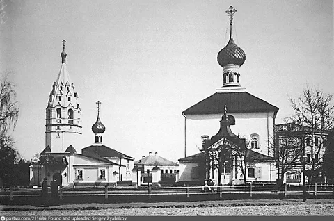

Церковь Симеона Столпника
На том месте, где сейчас находится дом с аркой на Красной площади, на пересечении улицы Советской с проспектом Октября,
раньше стояли две церкви. Летняя церковь во имя Симеона Столпника сначала была деревянной. Первые сведения о ней относятся к XVII веку.
Известно, что она сгорела во время пожара 3 мая 1711 г. После пожара приходские люди обратились за позволением построить новую церковь на этом месте,
«подався немного на восток». Епископ Ростовский и Ярославский Досифей дал благословенную грамоту на постройку деревянного храма.
Позднее, в 1723 году, была сооружена каменная церковь Симеона Столпника (по другим сведениям это произошло в 1762 году). В 1736-1738 гг. на пожертвования прихожан
к северу от летнего храма была возведена теплая церковь Введения Богоматери Семеновского прихода. В 1756 году к ее южному фасаду пристроили придел священномученика Харлампия.
Семеновская церковь была украшена стенной живописью, время росписи неизвестно. На деньги прихожан была приобретена богатая церковная утварь. Особенно был известен
щедростью и усердием к своему храму купец Сорокин. Храм имел большую библиотеку.
Приход церкви был значительным. По данным 1781 года — 563 человека, в начале XX века — 275.
Церковь Симеона Столпника дала название площади, которая была создана перед ней по регулярному плану застройки Ярославля 1778 года. В 1918 году Семеновская площадь
была переименована в Красную. Красный съезд, который идет от площади к Волге, тоже раньше назывался Семеновским.
В 1932 году храмы закрыли, а в 1933 году обе церкви Семеновского прихода были снесены.

Современный адрес: Отсутствует